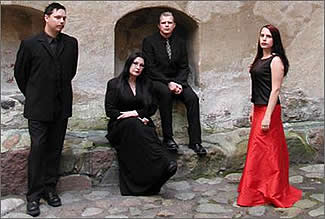
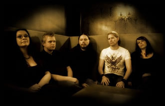

Formada em 1993, a banda sueca Arcana trazia uma
proposta musical diferenciada e até então pouco
conhecida: a combinação de instrumentos comuns na
música clássica, vocais líricos e alguns
elementos eletrônicos. O resultado é uma sonoridade
que resgata e reproduz uma atmosfera romanticamente medieval.
Inicialmente,
o Arcana não passava de um projeto despretensioso do músico
Peter Bjärgö. Após as primeiras composições,
Peter percebeu que necessitava de um acompanhamento vocal que
completasse a proposta musical. Desse modo, Ida Bengtsson foi
convidada. Em seguida, uma fita cassete foi gravada e entregue
a Roger Karmanik da Cold Meat Industry. Roger, imediatamente,
aprovou o trabalho da dupla e os convidou a participarem de uma
coletânea pelo próprio selo. Após a ótima
recepção que esta coletânea obteve junto à
crítica musical especializada, a Cold Meat Industry ofereceu
ao Arcana a oportunidade de gravar álbuns oficiais.
O primeiro trabalho foi lançado em 1996.
Dark Age of Reason trouxe dez faixas que se estendem
por pouco mais de trinta e sete minutos. Todo o trabalho segue
uma linha musical que explora sonoridades medievais através
de sintetizadores e linhas de vocal que se confundem com cordas
e sopros. Uma curiosidade é que as músicas praticamente
não tem letra; com exceção de frases soltas
eventualmente entre um compasso e outro. Ainda, em 1996, o Arcana
fez sua primeira apresentação pública.
No ano seguinte, o single Lizabeth foi
lançado com apenas três faixas: Cantar de Procella,
The dreams made of sand e Emperor of the Sun.
Este single antecipava o lançamento, ainda em 1997, do
segundo álbum oficial.
Cantar de Procella traz doze faixas
que mantém a proposta "Gótica Medieval"
do primeiro trabalho. Entretanto, neste novo disco, a instrumentação
obscura e atmosférica ganha letras que ajudam a compreender
melhor o disco como um todo. O Arcana ainda busca referências
da música sacra (como na faixa The Song of Preparation);
mas o destaque fica para a faixa que dá título ao
álbum. Cantar de Procella estende-se por mais
de seis minutos e revela-se uma rica composição
musical e um perfeito entrelaçamento de sonoridades que
levam o ouvinte à euforia e à angústia em
poucos compassos. Enquanto isso, a banda já fazia sua primeira
apresentação internacional, na cidade de Waregem,
Bélgica.
No ano de 1998, a banda foi convidada a participar
do tradicional festival Wave Gotik Treffen, realizado anualmente
na cidade de Leipzig (Alemanha), no qual apresentam-se bandas
como Lacrimosa,
Penumbra
e Tristania.
Em 1999, o Arcana, ainda com a formação
original, produz, grava e lança mais um single pela Cold
Meat Industry. Isabel traz mais três faixas e entre
elas a "épica" Love Eternal. Ainda,
participa de um festival promovido pela própria CMI, em
Atenas (Grécia). No ano seguinte, é lançado
o terceiro álbum oficial de sua discografia.
...The Last Embrace, ao longo de suas
dez faixas, dá continuidade à proposta da banda;
entretanto, fica nítido que, musicalmente, o trabalho é
mais requintado; com uma maior atenção aos detalhes
dos arranjos instrumentais e vocais. Este álbum também
foi o último com a participação de Ida Bengtsson
que abandonou o projeto após sua conclusão.
No ano de 2001, Peter, de forma solitária,
teve de reestruturar a formação da banda. Para tanto,
convidou Stefan Eriksson (instrumentista) e Ann-Mari Thim (vocal)
a participarem do Arcana. Desse modo, a banda, contando neste
momento com três músicos, retomou as composições
e iniciou os preparativos para o novo trabalho.
O
primeiro trabalho lançado com a nova formação
foi o single Body of Sin, de 2002. Apenas duas músicas
compunham este CD que serviu como uma preparação
para o quarto álbum oficial da carreira. Inner Pale
Sun, lançado no mesmo ano pela CMI, trouxe oito faixas
que, de um modo geral, exploram os timbres atmosféricos
e produzem uma sonoridade mais melancólica e sentimental,
como na sétima faixa Season of Thought. Neste
mesmo ano, o Arcana faz apresentações ao vivo na
Itália e na Alemanha.
Em meados de 2003 o contrato com a CMI não
foi renovado e Peter Bjärgö criou o selo "Erebus
Odora". Desse modo, o Arcana passou a lançar seus
trabalhos por este selo. Paralelamente, a esposa de Peter, Ia
Bjärgö, passa a integrar a formação oficial
e, além de vocais adicionais, também é responsável
pelo design do website e capas dos CD’s. Neste momento,
apesar de ter perdido o vínculo com a gravadora, a banda
não interrompe suas atividades e faz apresentações
na Alemanha e França.
Em 2004, foi lançado o álbum The
New Light, primeiro trabalho lançado pelo selo de
Peter e que também celebrava dez anos de fundação
da banda. The New Light contou com uma participação
mais intensa de todos os membros e obteve uma ótima receptividade
entre os ouvintes. Paralelamente, apresenta-se ao vivo na Rússia
e Finlândia.
Aproveitando a boa fase criativa, o Arcana lançou
no mesmo ano o álbum Le Serpent Rouge, que tornaria
a banda conhecida em todo o circuito alternativo do Dark Ambient.
Le Serpent Rouge é o trabalho mais diversificado
da carreira. Neste álbum encontra-se uma forte influência
da música oriental (como em Under the Sun), a
rítmica e a percussão são mais evidentes
e as linhas da melodia foram inspiradas na música persa.
Em 2005, a banda participou de festivais na Itália,
Dinamarca e Holanda. No ano seguinte, fez apresentações
na Suíça e o percussionista Mattias Borgh passou
a integrar a formação. Em 2007, também foram
realizados shows na Lituânia, Holanda, Bélgica e
Suécia. Paralelamente, o novo trabalho já estava
sendo composto.
Atualmente, o Arcana já divulgou a capa
do novo CD, que se chamará Raspail, e a relação
de suas músicas. Este álbum será lançado
pela gravadora alemã Kalinkaland até o final de
fevereiro.
Ao longo de sua carreira, o Arcana também
participou de diversas coletâneas, incluindo o CD Dead
Can Dance tribute - Summoning of the Muse, ao lado de bandas
como Dark Sanctuary
e Black Tape for a Blue Girl.
Não é possível afirmar que
o Arcana seja precursor de um estilo musical que combine elementos
medievais, eletrônicos e étnicos. Até mesmo
porque não é possível enquadrá-lo
apenas sob um estilo como Neo-Classical, Dark Ambient/Atmospheric,
Gótico ou Darkwave. Entretanto, certamente, é uma
das bandas mais prósperas neste segmento que, mais importante
do que as próprias músicas, são os sentimentos
e atmosferas que podem ser criadas e transmitidas.
Por
Spectrum
Downloads
Disponíveis: